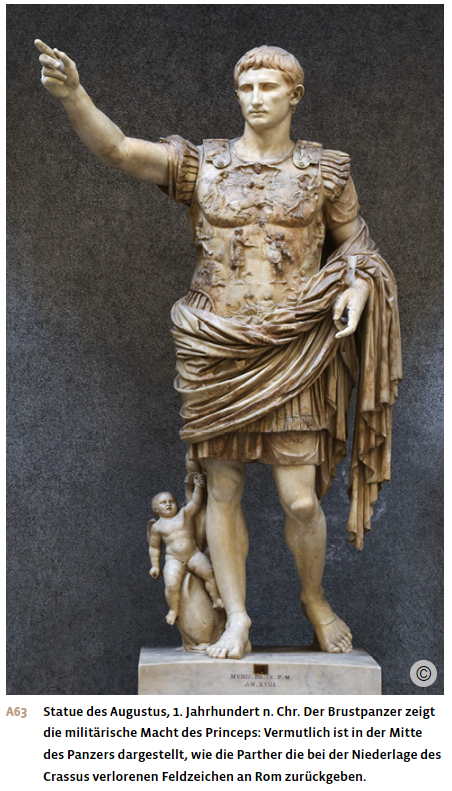
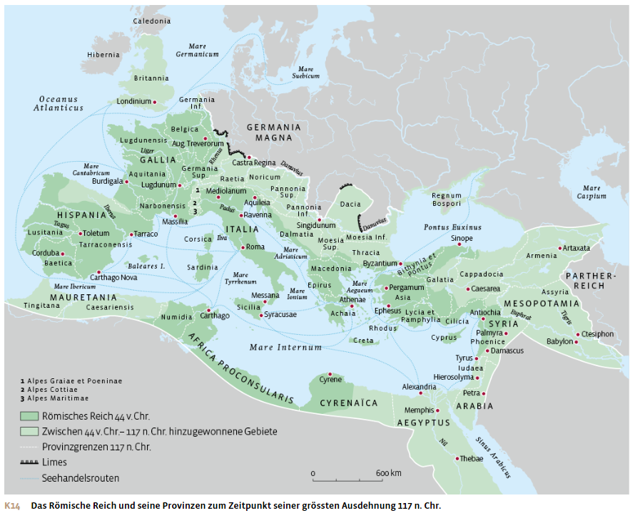
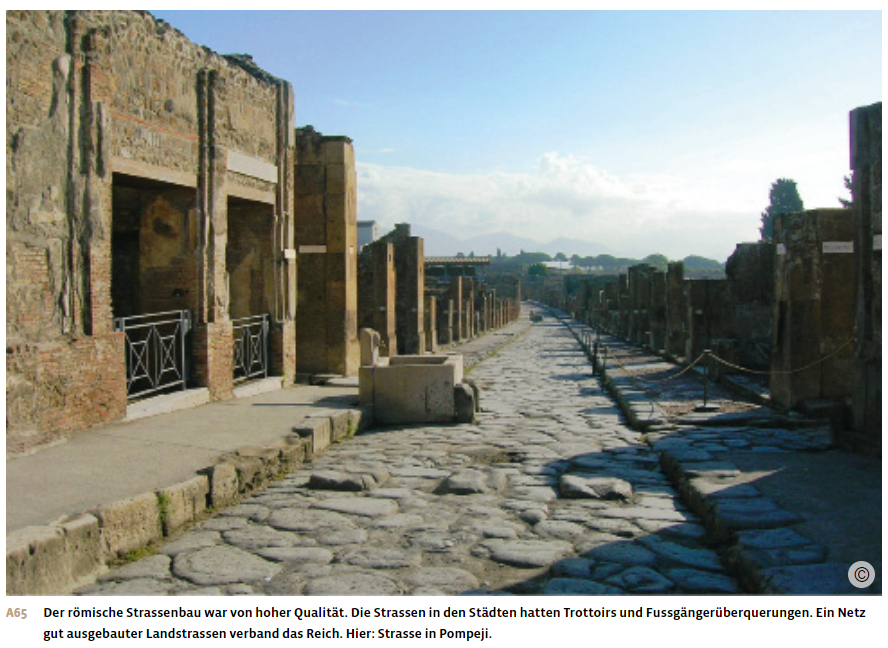
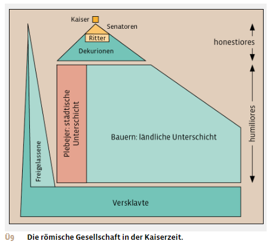
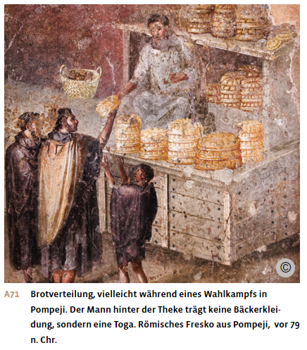

Materialdossier: Römische Kaiserzeit
Vollständiger Inhalt des Unterrichtsdossiers · Römische Antike_Kaiserzeit.docx
Die römische Kaiserzeit
Augustus und das Prinzipat
Augustus wird Alleinherrscher
Der Tod Caesars 44 v. Chr. brachte nicht die von seinen Mördern erhoffte Rückkehr zu einer stabilen Republik. Die Konflikte und Gewalttätigkeiten innerhalb der römischen Nobilität gingen unvermindert weiter. Entscheidend für diese Auseinandersetzungen war, dass Caesar in seinem Testament seinen Grossneffen Gaius Octavius, meist Octavian genannt, adoptiert hatte. Er erbte damit nicht nur sein Vermögen, sondern auch seinen Namen Gaius Iulius Caesar. Seine Position in Roms Machtelite musste er sich allerdings erst erkämpfen. Im Jahr 42 v. Chr. besiegte Octavian zusammen mit Caesars Generälen Marcus Antonius und Lepidus die Caesarmörder. Die drei errichteten ein zweites Triumvirat, eine regelrechte Militärdiktatur. Doch bald zerbrach die Einigkeit. Zuerst wurde Lepidus entmachtet, dann kam es zum Bürgerkrieg zwischen Octavian und Marcus Antonius. In der Seeschlacht von Actium 31 v. Chr. besiegte Octavian schliesslich Marcus Antonius und dessen Geliebte Kleopatra VII., die Pharaonin von Ägypten. Damit kam Ägypten als letzte grosse hellenistische Monarchie unter römische Herrschaft. Octavian war nun der mächtigste Mann Roms.
Octavian stand allerdings vor dem gleichen Problem wie 15 Jahre zuvor sein Adoptivvater Caesar. Er hatte seine Macht durch Rechtsbruch und Blutvergiessen erlangt. Wie konnte er seine Position als Alleinherrscher sichern und diese mit den republikanischen Traditionen der Nobilität verbinden? Doch die Republik war nun eine andere als noch zu Caesars Zeiten: Die Bürgerkriege und Morde hatten den Wunsch nach Frieden wachsen lassen, viele Anhänger der alten Republik waren gestorben. Längst hatten sich grosse Teile der Bevölkerung in Stadt und Land wie auch viele Soldaten eine Alleinherrschaft gewünscht. Auch viele Senatoren waren nun bereit, ein neues politisches System zu akzeptieren, um die Unruhen zu beenden. Unter diesen Voraussetzungen gelang es Octavian, sich als Alleinherrscher zu etablieren, wobei er ebenso umsichtig wie entschlossen vorging.
Die Herrschaftsweise des Prinzipats
Am 13. Januar 27 v. Chr. gab Octavian im Senat alle Sondervollmachten zurück, die er während der Bürgerkriege beansprucht hatte. Damit war die Republik formell wiederhergestellt. Allerdings übertrugen die Senatoren Octavian postwendend – gewiss nach vorheriger Absprache mit ihm – erneut weitreichende Befugnisse, so vor allem den Oberbefehl über die Truppen des Reiches. Auf der nächsten Senatssitzung drei Tage später erhielt Octavian den Ehrentitel Augustus. Sprachlich mit «Autorität» verwandt, ist dieser Begriff nicht leicht zu übersetzen; im Deutschen wird er meist mit «der Erhabene» wiedergegeben, jedenfalls rückte er Octavian weit über die anderen Senatoren hinauf in die Nähe des Göttlichen.
In den folgenden Jahren baute Augustus seine Herrschaft weiter aus. Dabei war er stets bemüht, dem Senat Respekt zu zollen, indem er offiziell weiterhin von der wiederhergestellten Republik sprach und weder den Titel eines Königs noch eines Diktators für sich beanspruchte. Stattdessen nannte er sich «princeps», «der Erste», der die anderen nicht an Macht, sondern nur an Autorität überragte. Mit den Senatoren kommunizierte Augustus daher höflich und zurückhaltend und behandelte sie als nahezu Gleichberechtigte.
Um sein Prinzipat dennoch zu festigen, zog Augustus die Befugnisse der wichtigsten republikanischen Ämter an sich, ohne sie aber offiziell zu bekleiden; etwa die Befugnisse des Volkstribuns oder des Censors. Die Ämter selbst, die in der Zeit der Republik wichtige politische Funktionen hatten, wurden nun zu reinen Verwaltungsämtern herabgestuft. Die Entscheidungsgewalt lag beim Princeps. Zusammen mit dem Oberbefehl über die Legionen verfügte er damit über eine stabile Machtposition. In den militärisch wichtigen Provinzen setzte Augustus die Statthalter selbst ein. Diese Provinzen werden daher auch kaiserliche Provinzen genannt. In den übrigen Provinzen wurden die Statthalter aus dem Kreis der Senatoren durch das Los bestimmt – daher werden sie als senatorische Provinzen bezeichnet.
Indem Augustus in seinem Prinzipat die Ämter nicht selbst bekleidete, sondern die Amtsgewalt an sich zog, umging er das Iterationsverbot, die Annuität sowie die Rechenschaftspflicht der Amtsträger nach Ablauf ihrer Amtszeit. Damit waren nun aber wesentliche Prinzipien der republikanischen Zeit faktisch ausser Kraft gesetzt. Die Wiederherstellung der Republik war letztlich nur Fassade.
Die Darstellung der Kaisermacht
Augustus demonstrierte seine Macht durch eine massive Selbstdarstellung in der Öffentlichkeit. So liess er auf dem Marsfeld in Rom einen riesigen Obelisken aufstellen, der eigens aus dem neu eroberten Ägypten auf dem Seeweg herbeigeschafft worden war. Der Schatten dieses Obelisken zeigte das Jahr hindurch den jeweiligen Stand der Sonne in den Tierkreiszeichen an, die auf dem Boden markiert waren. Am 23. September, dem Geburtstag des Augustus, zeigte der Schatten des Obelisken auf den Eingang der Ara Pacis, des Friedensaltars. Damit wurde die Geburt des Princeps symbolisch mit der Friedensära verbunden.

Augustus erweiterte das Forum Romanum, liess ein neues grosses Theater, das Marcellustheater, und zahlreiche Tempel errichten. Da Augustus auch das Amt des obersten Priesters übernommen hatte, konnte er die römischen Kulte in seinem Sinne regeln. In den Provinzen gab es sogar Formen göttlicher Verehrung des Augustus, in Verbindung mit der Göttin Roma, der Personifizierung Roms.
Auch die römische Literatur feierte die Taten des Princeps und stellte sie in die Tradition der grossen römischen Vergangenheit. So versah der Dichter Vergil ab 29 v. Chr. sein Epos «Aeneis» über den mythischen Stammvater Roms, Aeneas, mit zahlreichen Anspielungen und Hinweisen auf die Herrschaft des Augustus. Aeneas soll nach dem Fall Trojas in die Gegend von Rom geflohen sein und hier die Vorläufersiedlung Roms gegründet haben. Romulus, der legendäre Gründer Roms, sei sein Nachfahre gewesen. Auch der Geschichtsschreiber Livius zieht in seinem Werk eine direkte Linie von der Gründung Roms bis zur Herrschaft Augustus’. Der Dichter Horaz feierte in seinen Oden das Ende der Bürgerkriege, das Augustus zu verdanken sei. Dass das neue Herrschaftssystem aber auch Probleme für Literaten schaffen konnte, zeigt das Schicksal von Ovid. Der in Rom äusserst populäre Dichter wurde 8 n. Chr. ans Schwarze Meer verbannt. Die genauen Hintergründe seiner Verbannung sind unklar, möglicherweise war Ovid in eine Verschwörung verwickelt. Zudem soll seine freizügige Dichtung «Ars amatoria» («Die Kunst der Liebe») beim Princeps Anstoss erregt haben. Denn Augustus zeigte sich als Hüter der alten römischen Sitten und Moral und liess die Strafen bei Unzucht und Ehebruch verschärfen.
Augustus inszenierte sich auch als grosser Feldherr. Zu Beginn seiner Herrschaft nahm Rom Ägypten ein. Im Jahr 20 v. Chr. schloss er Frieden mit dem König des Partherreiches. Die freiwillige Rückgabe einer römischen Standarte, die die Parther in einer früheren Schlacht erbeutet hatten, präsentierte Augustus in Rom als prestigeträchtigen Sieg. Später eroberte das Römische Reich unter Augustus’ Herrschaft neue Gebiete vor allem im östlichen Alpenraum und westlich der Donau. Eine grosse Niederlage gegen germanische Stämme im Jahr 9 n. Chr. setzte dieser Expansion jedoch ein Ende.
Herrschaft und Gesellschaft im römischen Kaiserreich
Das kaiserliche Akzeptanzsystem
Augustus hatte die Strukturen seiner Herrschaft so angelegt, dass das Prinzipat über seinen Tod hinaus Bestand hatte. Nach dem Tod des Augustus im Jahre 14 n. Chr. übernahm sein Stiefsohn Tiberius die Herrschaft, danach stellte diese Familie mit Caligula, Claudius und Nero drei weitere Kaiser. So entwickelte sich das Prinzipat schliesslich zu einer eigentlichen Monarchie, dem römischen Kaisertum. Da Augustus als Adoptivsohn Caesars ebenfalls Gaius Iulius Caesar hiess und seine Nachfolger die Namensbestandteile Caesar und Augustus als Titel übernahmen, entwickelten sich daraus die Begriffe «Kaiser» und «Zar». Der offizielle Titel des römischen Kaisers lautete nun: «imperator Caesar Augustus».
Die komplizierten Anfänge des Prinzipats zwangen die ersten Kaiser, ihre Machtposition sorgfältig auszubalancieren: In den Senatssitzungen wurden weiterhin Staatsangelegenheiten beraten und Beschlüsse gefasst, auch wenn der Senat letztlich der Autorität des Princeps unterstand. Auch die Volksversammlung trat zunächst weiterhin zusammen und wählte die Magistraten. Doch schränkte der Kaiser ihre Wahlmöglichkeiten ein, indem er nur wenige, ihm genehme Kandidaten vorschlug. Im Gegenzug sorgte er für eine gute Lebensmittelversorgung in Rom und präsentierte sich im Circus oder Amphitheater als volksnaher Herrscher. Dazu inszenierte er aufwendige Wagenrennen und Gladiatorenspiele, die für die Stadtbevölkerung eine wichtige Unterhaltung darstellten. Für die Legionen und seine Leibgarde, die Prätorianer, war der Princeps der Oberbefehlshaber und damit auch der Garant für einen regelmässigen Sold.
Die Macht des Prinzipats beruhte also auf der Akzeptanz der drei massgeblichen Gruppen im Staat: Senat, Volk von Rom und Heer. In der Forschung wird das Prinzipat deshalb auch als «Akzeptanzsystem» beschrieben.
Stabilität und Infrastruktur in den Provinzen
Die ersten zwei Jahrhunderte nach Christus waren durch eine lange Phase des Friedens im Inneren des Reichs gekennzeichnet. Das Römische Reich umfasste nun den gesamten Mittelmeerraum und reichte im Norden bis nach Britannien und an den Rhein, im Westen bis an die Atlantikküste, im Süden bis an den Rand der Sahara und im Osten bis an Euphrat und Tigris. Abgesehen von religiös motivierten Aufständen in Iudaea und vereinzeltem Widerstand in Britannien und am Rhein wurde die römische Herrschaft weitgehend akzeptiert.
Ein wesentlicher Faktor für die hohe Akzeptanz der römischen Herrschaft war, dass die Verwaltung seit Augustus ein hohes Mass an Stabilität, Rechtssicherheit und Ordnung mit sich brachte. Die Verwaltung funktionierte meist besser als zuvor unter den einheimischen Herrschenden. Zudem entstand in den Provinzen unter römischer Herrschaft eine stabile lokale Infrastruktur mit Strassen und Wasserversorgung. Mit aufwendigen Baumassnahmen wurden offene Wasserleitungen, sogenannte Aquädukte, zur Versorgung der Städte angelegt sowie Druckleitungen innerhalb der Stadt. Viele Häuser in den Städten waren zudem an eine Kanalisation angeschlossen. Auch populäre römische Freizeiteinrichtungen standen den Menschen in den Provinzen nun zur Verfügung, etwa Amphitheater und öffentliche Badeanstalten, die sogenannten Thermen.
In den Provinzen entstanden zudem zahlreiche neue Städte nach dem Vorbild Roms. Diese Siedlungen zeichneten sich durch eine erstaunliche Einheitlichkeit aus, ob sie nun in der syrischen Wüste oder an der Rheingrenze lagen: Fast alle hatten ein schachbrettartiges Strassennetz, ein Forum als Markt- und Versammlungsplatz am zentralen Schnittpunkt der Hauptachsen, Tempel für die drei wichtigsten römischen Gottheiten Jupiter, Juno und Minerva im Stadtzentrum sowie Amphitheater, Theater und Thermen. Ähnlich wie in Rom bildeten diese Bauten einen öffentlichen Raum, in dem sich sowohl die einfache Stadtbevölkerung als auch die Oberschicht aufhielt. Dank der hochentwickelten römischen Bautechnik sind viele dieser Bauwerke im ganzen Gebiet des Römischen Reiches bis heute erhalten geblieben.

Romanisierung
Angetrieben vom Bau der Infrastruktur und Städte verbreiteten sich die römische Lebensweise und die lateinische Sprache im ganzen Reich. Dieser Prozess der Romanisierung wurde, wie zuvor die Hellenisierung, nicht direkt von oben gesteuert, vielmehr übernahm die Bevölkerung in den Provinzen aus eigenem Antrieb wesentliche Elemente der römischen Kultur. Es war oft die lokale Oberschicht in den Provinzstädten, welche die grossen öffentlichen Bauten nach römischem Vorbild finanzierte.
Im Westen des Reiches setzte sich Latein als die gängige Verkehrssprache durch, was sich bis heute im Fortleben romanischer Sprachen wie Italienisch, Französisch, Spanisch, Portugiesisch oder Rätoromanisch zeigt. Der Osten des Reiches blieb zwar von der griechischen Kultur geprägt, aber auch hier wurde die römische Herrschaft akzeptiert und Latein neben Griechisch als zweite Amtssprache verwendet.
Schliesslich fand die römische Herrschaft in den Provinzen auch ihren religiösen Ausdruck. So gab es in vielen Städten einen Kult für die Göttin Roma, eine Personifikation Roms, sowie für Augustus und für die lebenden Kaiser. Letztere wurden zwar zu Lebzeiten nicht vergöttlicht, aber die Bevölkerung brachte Opfer für die Gesundheit des Kaisers und das Wohl des Reiches dar. Dennoch wurden lokale Traditionen, insbesondere in der Religion, nicht eingeschränkt. Die einheimische Bevölkerung konnte weiterhin ihre eigene Kultur und Sprache bewahren. Dies trug wesentlich zur Akzeptanz der römischen Herrschaft bei.
Ein weiterer Aspekt der Romanisierung war, dass die Kaiser die Oberschichten der unterworfenen Völker geschickt in ihr Herrschaftssystem mit einbanden. Ausgewählte Provinzbewohnerinnen und -bewohner und zum Teil ganze Städte konnten das römische Bürgerrecht erlangen. Auch Provinzbewohner, die in den römischen Hilfstruppen Militärdienst leisteten, erhielten nach ihrer Dienstzeit das römische Bürgerrecht zugesprochen. Die römische Armee wurde daher in vielen Provinzen weniger als Besatzungsmacht, sondern vielmehr als Karriereleiter wahrgenommen.
Mit der Verleihung des römischen Bürgerrechts war eine Reihe von Privilegien verbunden, vor allem im Bereich des Strafrechts. So durften römische Bürger nicht gefoltert werden und hatten Anspruch auf einen ordentlichen Prozess vor einem römischen Magistrat. Im Laufe der Zeit wurden auch Vertreter der Eliten aus den Provinzen in den römischen Senat aufgenommen, sodass die Führungsschicht des Reiches nicht mehr ausschliesslich aus Italien stammte. So war es folgerichtig, dass ab 98 n. Chr. Kaiser auch aus einer Provinz stammen konnten.
Im Jahr 212 n. Chr. verlieh Kaiser Caracalla, dessen Familie selbst aus Nordafrika und Syrien kam, allen männlichen Bewohnern des Reiches das römische Bürgerrecht. Alle waren nun Römer, unabhängig davon ob sie aus Rom, Ägypten oder Britannien waren.
Verwaltung und Sicherung des Reiches
Das Reich war – mit Ausnahme des römischen Kernlandes auf der italischen Halbinsel – in Provinzen gegliedert. Unter Augustus waren es 19 Provinzen, im Laufe der Kaiserzeit kamen weitere hinzu. Diese wurden von Statthaltern verwaltet, die der Kontrolle des Kaisers unterstanden. Der Statthalter hatte den Oberbefehl über die in der Provinz stationierten Truppen. Darüber hinaus war er die Berufungsinstanz in Rechtsfragen: Er reiste durch seinen Amtsbereich und hielt an Ort und Stelle Gericht.
Neben dem Statthalter verkörperte das Militär die römische Herrschaft in den Provinzen. Vor allem in den Grenzgebieten waren römische Legionäre stationiert. Ihre lateinische Sprache wie ihre Kleidung, Ess- und Freizeitgewohnheiten förderten die Romanisierung. Zudem liessen sich viele Veteranen nach ihrer Dienstzeit in den Provinzen nieder, in denen sie gedient hatten.
Den Kern der Armee bildeten 24 bis 27 Heereseinheiten, die Legionen, die jeweils zwischen 3000 und 6000 Soldaten römischer Abstammung umfassten. Hinzu kamen die nicht-römischen Hilfstruppen. Diese Armee stellte eine enorme finanzielle Belastung für den römischen Staatshaushalt dar: Insgesamt dienten zwischen 250000 und 300000 Mann gleichzeitig, deren Unterhalt jährlich mehrere Millionen Sesterzen verschlang. Die Militärausgaben machten weit über die Hälfte der Gesamtausgaben des Staates aus. Auch die Veteranen mussten versorgt werden. Dies geschah in der frühen Kaiserzeit nun eher durch Geldzahlungen und nicht mehr wie in der späten Republik durch Landvergabe. Augustus hatte zu diesem Zweck eigens eine Kasse eingerichtet, die mithilfe einer Erbschaftssteuer finanziert wurde.
Während im Inneren des Reichs weitgehend Frieden herrschte, kam es an den Grenzen immer wieder zu Kriegen, so im Osten mit dem Partherreich, das sich über das Gebiet des heutigen Irak und Iran erstreckte, und im Norden mit den Germanen und anderen Gruppen, die nördlich von Rhein und Donau lebten. Die Beziehungen zu den Nachbarn waren aber nicht nur von Konflikten geprägt, sondern auch von vielfältigen Kontakten. Im Südwesten des heutigen Deutschlands errichteten die Römer den Limes, eine mit Palisaden befestigte Grenze. Der Limes war weniger ein militärischer Schutzwall, sondern diente der Kontrolle des Grenzverkehrs zwischen dem Reich und dem freien Germanien. Für die Völker nördlich des Limes war die römische Kultur mit ihren zivilisatorischen Errungenschaften und Luxusgütern ebenfalls attraktiv.
Die kaiserliche Machtzentrale in Rom kam gemessen an der Grösse des Reiches mit sehr wenig Verwaltungspersonal aus. Der Kaiser war oberster Gerichtsherr der Provinzen und antwortete auf Anfragen der Statthalter durch amtliche Bescheide. Er unternahm Reisen in die Provinzen und empfing Gesandtschaften aus den Städten.
Die Hauptlast der römischen Verwaltung trugen die weit über tausend Städte in den Provinzen. Sie verfügten über eine gewisse Autonomie. Das reduzierte den Verwaltungsaufwand für die römische Obrigkeit erheblich: Vieles konnte bereits auf dieser unteren Ebene entschieden werden, ohne dass der Statthalter eingreifen musste. Die Bürger wählten Stadträte, die ihre lokalen Angelegenheiten selbst regeln konnten. Einige Städte erhielten sogar das Recht, eigene Münzen zu prägen. Die Beamten der Stadtverwaltung rekrutierten sich aus der reichen lokalen Oberschicht, die man in Rom als Dekurionen bezeichnete.
Das römische Recht
Neben der effizienten Verwaltung und der städtischen Autonomie war das hochentwickelte Rechtswesen ein weiterer wesentlicher Pfeiler der römischen Herrschaft. Bereits in republikanischer Zeit hatten sich Juristen um die Klärung von Rechtsfragen bemüht. Daraus entwickelte sich in der Kaiserzeit ein dichtes Regelwerk, das in der Form von Antworten der kaiserlichen Kanzlei auf eingegangene Rechtsfragen entstand. Diese sogenannten Reskripte wurden später systematisch gesammelt und in Gesetzesbüchern zusammengestellt. Die gewaltige Textsammlung des Corpus Iuris Civilis aus dem 6. Jahrhundert n. Chr. fasste schliesslich die gesamte römische Rechtsentwicklung zusammen. Sie umfasste neben einer Sammlung der kaiserlichen Reskripte auch ein juristisches Lehrbuch sowie eine Sammlung der wichtigsten Texte römischer Rechtsgelehrter, die sich um eine Systematisierung des Rechts bemühten.
Mit seinen zahlreichen Regelungen schuf das Römische Reich eine für die vormoderne Gesellschaft ungewöhnlich hohe Rechtssicherheit. Die Rechtsprechung lag nicht wie im demokratischen Athen in den Händen ungeschulter Laien, die durch das Los bestimmt wurden, sondern kam einem modernen Verständnis der Rechtswissenschaft näher: Recht konnte bei bekannten Juristen studiert werden, später auch an Rechtsschulen, so in Rom, Berytos (Beirut) und Konstantinopel (Istanbul). Die Rechtsprechung wurde durch Verwaltungsbeamte mit juristischer Erfahrung ausgeübt. Bei Rechtsstreitigkeiten bestand stets die Möglichkeit, sich an eine höhere, professionalisierte Instanz zu wenden, über den Statthalter bis hin zur kaiserlichen Kanzlei in Rom.
Das römische Recht ist das vielleicht wichtigste Erbe der römischen Kaiserzeit für die spätere europäische Geschichte. Seine Grundsätze blieben weit über den Untergang des Römischen Reiches hinaus wirksam und fanden Eingang in viele spätere Rechtsordnungen, bis zum Code Civil, den Napoleon 1804 einführte und der heute noch Europas Rechtsprechung prägt. So existierte zum Beispiel bereits im römischen Recht ähnlich wie heute ein Garantierecht, also die Möglichkeit, eine mangelhafte Sache innerhalb einer gewissen Zeit gegen Rückerstattung des Kaufpreises zurückzugeben. Weil die modernen Rechtssysteme so stark vom römischen Recht geprägt sind, lernen Jurastudierende auch noch heute die Grundzüge des römischen Rechts.

Wirtschaft und Gesellschaft
Das Kaiserreich war ein grosser Wirtschaftsraum mit einer einheitlichen Währung. Ein gut ausgebautes Strassennetz und sichere Schifffahrtswege garantierten nicht nur die Versorgung Roms, sondern förderten auch den Handel zwischen den Provinzen. So wuchs das Reich zu einem grossen Binnenmarkt zusammen. Im fruchtbaren Nilland Ägyptens wurde Getreide angebaut und die Überschüsse nach Rom transportiert. Auch Nordafrika verfügte über reiche Getreidevorkommen, dazu kamen Oliven und Wein. Griechenland und Kleinasien lieferten Olivenöl. Spanien war reich an Edelmetallen wie Gold, Silber und Kupfer. Der Warentransport erfolgte bevorzugt auf dem Seeweg.
In den Städten blühten aufgrund der langen Friedensperiode Handel und Gewerbe. Dies schlug sich in einer beeindruckenden Bautätigkeit nieder. Viele Handwerker und Händler organisierten sich in «collegia», in Vereinen, um ihre Interessen gemeinsam zu vertreten. Es gab ein grosses Angebot an Produkten aus dem ganzen Reich, darunter auch Luxusgüter. Viele Geschäfte wurden von Frauen oder auch von Sklaven betrieben.
Die römischen Kaiser griffen kaum in die Wirtschaft ein; ihre Einnahmen stammten hauptsächlich aus Steuern auf den Grundbesitz sowie aus den Erträgen der riesigen kaiserlichen Landgüter in Italien und den Provinzen sowie staatlichen Minen. Der Kaiser sorgte weiterhin für das Wohl der einfacheren Bevölkerung in Rom.
Der Grossteil der Bevölkerung lebte jedoch weiterhin auf dem Land, die Landwirtschaft blieb die Grundlage der römischen Wirtschaft. Neben den grossen Landgütern hielten sich auch kleine Höfe. Da durch die Konsolidierung des Reiches weniger versklavte Kriegsgefangene zur Verfügung standen, verpachteten viele Gutsbesitzer ihr Land an von ihnen abhängige Kleinbauern.

An der Spitze der römischen Gesellschaft standen unter dem Kaiser weiterhin die Senatoren, auch wenn die politische Bedeutung des Senats durch die Kaiserherrschaft stark abgenommen hatte. Den zweiten Stand bildeten die Ritter, die wichtige Funktionen in der Reichsverwaltung und im Militär ausübten, etwa in der Administration der Provinzen oder als Offiziere in der Armee. Diese beiden Stände waren durch ein Mindestvermögen definiert: 1 Million Sesterzen für die Senatoren, 400000 für die Ritter. Zum Vergleich: Ein einfacher Legionär verdiente etwa einen Sesterz pro Tag. Die dritte wichtige Gruppe bildeten die lokalen Oberschichten in Italien und den Provinzen, die Dekurionen. Diese waren meist wohlhabende Grossgrundbesitzer. Sie sassen in den Stadträten oder waren Bürgermeister, sie finanzierten die Bautätigkeit und die Infrastruktur in den zahlreichen Städten des Reiches. Die Dekurionen konnten in den Ritter- oder Senatorenstand aufsteigen, was wesentlich zur Integration der provinzialen Eliten in das Reich beitrug.
Die drei Gruppen der Senatoren, Ritter und Dekurionen bildeten zusammen die «honestiores», die «Ehrenwerteren». Diese hatten eine privilegierte Stellung in der Gesellschaft, insbesondere im Strafrecht. So wurde gegen Angehörige der Oberschicht selten die Todesstrafe verhängt, und wenn, dann mit dem Schwert, da dies nicht als entehrender Tod galt. Unter den «honestiores» standen die «humiliores», die «Niedrigeren». Ihre soziale Stellung hing von ihrem Beruf und ihrer wirtschaftlichen Bedeutung ab. So konnten Handwerker und Unternehmer in den Städten durchaus zu Vermögen kommen.
Mindestens ebenso wichtig wie die finanzielle Unterteilung in Ehrenwerte und Niedere waren die rechtlichen Unterscheidungen frei geboren, freigelassen oder unfrei sowie römischer Bürger oder «Peregriner», «Fremder». Gleichzeitig waren diese Rechtsstände oft nicht deckungsgleich mit dem Besitz. Einige freigelassene Sklaven waren in Geldgeschäften so erfolgreich, dass sie ein grösseres Vermögen anhäufen konnten als manche Ritter oder gar Senatoren. In diesem Bereich war die Gesellschaft sehr dynamisch. Die freien römischen Bauern und die Plebejer in den Städten waren zwar rechtlich bessergestellt, aber vielen ehemaligen Sklaven oder Peregrinen sozial und wirtschaftlich weit unterlegen.
Die Plebejer Roms profitierten wie schon zur Zeit der Republik von der Versorgung durch die Obrigkeit. Die Kaiser sicherten sich die Gunst der Unterschicht durch eine grosszügige Versorgung mit Lebensmitteln und zahlreichen Unterhaltungsangeboten. 31 v. Chr. liess Augustus den Circus Maximus, eine Arena für Wagenrennen, ausbauen. Kaiser Vespasian errichtete 72 n. Chr. das Kolosseum, in dem Gladiatorenkämpfe und Tierhetzen vor bis zu 50000 Zuschauern und Zuschauerinnen stattfanden. Die Kaiser investierten auch in die technische Infrastruktur Roms. Sie verbesserten die Wasserversorgung und schufen Vorrichtungen gegen Überschwemmungen.
Aus: Notz, Thomas; Frey, Walter (Hg.): Geschichte fürs Gymnasium. Steinzeit bis 1450. Bern 2024, S. 200-210.

Aufträge
Das Prinzipat
1. Erläutere das Prinzipatssystem in eigenen Worten.
2. Welchen Ehrentitel verlieh der Senat Octavian im Jahr 27 v. Chr.? Wie demonstrierte Octavian seine Macht in der Öffentlichkeit?
Herrschaft und Gesellschaft
3. Erkläre das kaiserliche Akzeptanzsystem.
4. Erkläre, warum viele Menschen in den Provinzen die römische Herrschaft akzeptierten.
5. Welche Vorteile bot das römische Bürgerrecht?
6. Wie gelang es den römischen Kaisern, ein so grosses Reich zu verwalten und zu kontrollieren?
7. Was ist das «Corpus Iuris Civilis»?
8. Erkläre, wie das römische Reich als Binnenmarkt funktionierte.
9. Welche sozialen Schichten prägten die Gesellschaft zur Zeit der Kaiser?
10. Worin liegt die Bedeutung der römischen Kaiserzeit für die europäische Geschichte?
11. Inwiefern beschönigt Augustus seine politische Karriere in seinem «Tatenbericht» (S. 14)?
Quelle
Augustus (63 v. Chr.–14 n. Chr. über seine Stellung, 13 n. Chr.
Der erste römische Kaiser Augustus hat gegen Ende seines Lebens einen Tatenbericht verfasst, der im ganzen Reich auf Inschriften in lateinischer und im Osten auch in griechischer Sprache publiziert wurde. In Ancyra (dem heutigen Ankara in der Türkei) hat sich ein Exemplar des Tatenberichts erhalten.
Die Taten des vergöttlichten Augustus, mit denen er den Erdkreis der Herrschaft des römischen Volkes unterwarf, sowie die Aufwendungen, die er für das römische Staatswesen und Volk machte, eingegraben auf zwei ehernen Pfeilern, die in Rom aufgestellt sind, wiedergegeben in folgender Abschrift. […]
In meinem sechsten und siebten Konsulat [28 und 27 v. Chr.] habe ich, nachdem ich die Flammen der Bürgerkriege gelöscht hatte und mit der einmütigen Zustimmung der gesamten Bevölkerung in den Besitz der staatlichen Allgewalt gelangt war, das Gemeinwesen aus meiner Machtbefugnis wieder der Ermessensfreiheit des Senats und des römischen Volkes überantwortet. Für dieses mein Verdienst wurde mir auf Beschluss des Senats der Name Augustus gegeben. Die Türpfosten meines Hauses wurden auf staatlichen Beschluss mit Lorbeer geschmückt, und ein Bürgerkranz wurde über meinem Tor angebracht. Ein goldener Schild wurde in der Curia Julia [Senatsgebäude, dessen Bau von Caesar begonnen und von Augustus beendet wurde] aufgestellt, den mir der Senat und das römische Volk geweiht haben wegen meiner Tapferkeit und Milde, meiner Gerechtigkeit und Hingabe, wie es die Aufschrift auf diesem Schild bezeugt.
Seit dieser Zeit überragte ich alle übrigen an Autorität, an Amtsgewalt aber besass ich nicht mehr als die anderen, die auch ich im Amt zu Kollegen hatte.
Als ich mein dreizehntes Konsulat [2 v. Chr.] verwaltete, gaben mir der Senat, der Ritterstand und das römische Volk einmütig den Titel «Vater des Vaterlandes». Sie beschlossen, dies solle inschriftlich verzeichnet werden in der Vorhalle meines Hauses sowie in der Curia Julia und auf dem Augustusforum auf der Basis des Viergespanns, das mir dort auf Senatsbeschluss hin errichtet worden war. Während ich dies schreibe, bin ich in meinem 76. Lebensjahr.
Zitiert nach: Augustus: Res gestae. Tatenbericht (Monumentum Ancyranum), Lateinisch, Griechisch und Deutsch, übersetzt, kommentiert und herausgegeben von Marion Giebel, Stuttgart 2007 (1975), S. 37 und 39.